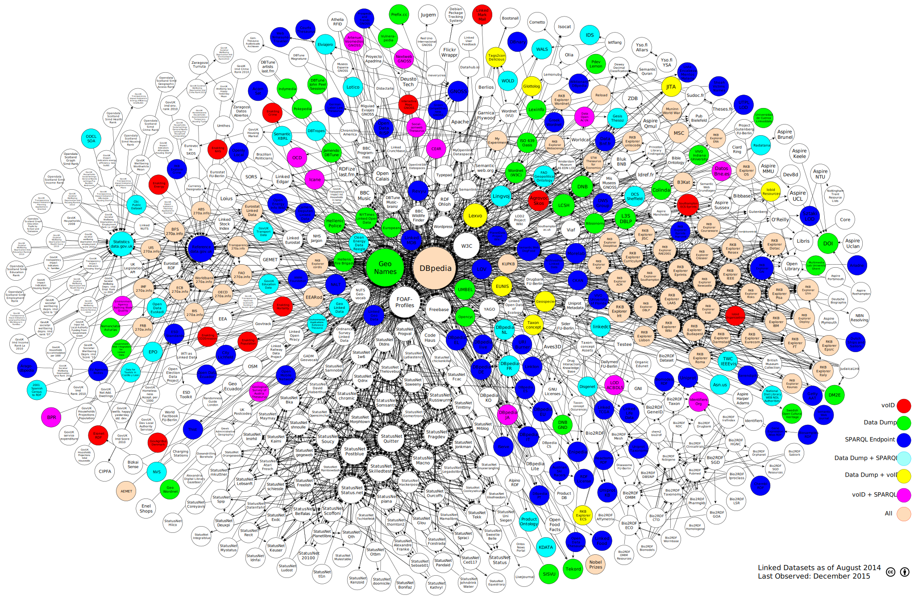

LOD Cloud Quality Assessment
Results and Scripts for the Quality Assessment of the LOD Cloud
== Shortcuts ==
> Home
> Current Ranking
> Visualisation of Accessible Datasets
> Visualisation of Overall Data Quality
Metadata accessibility points
Using the LOD Observer module (from the lodqa scripts) we retrieved a number of datasets that can be used during the quality assessment. For this we retrieved the distributions (dcat:Distribution) defined in the dataset metadata (dcat:Dataset), in order to identify the media types and the corresponding URLs that make the dataset ready for consumption. During the acquisition process, we were interested in finding a data dump (containing all triples of the dataset), a SPARQL endpoint description, and a voID description for each dataset. Ideally, all datasets meet all three conditions. This image shows the datasets retrieved and their accessibility points. Click on the image to enlarge.
Attribution
Linking Open Data cloud diagram 2014, by Max Schmachtenberg, Christian Bizer, Anja Jentzsch and Richard Cyganiak. http://lod-cloud.net/"